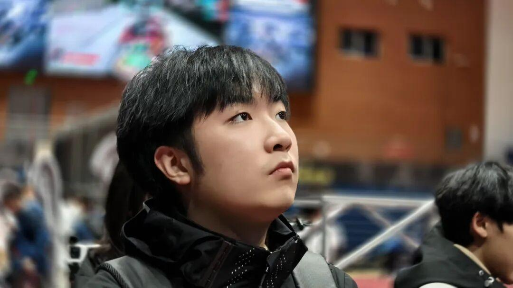
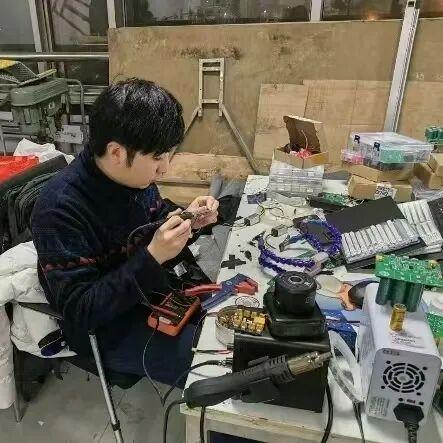
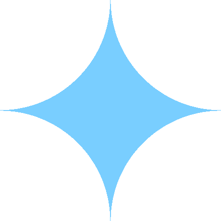
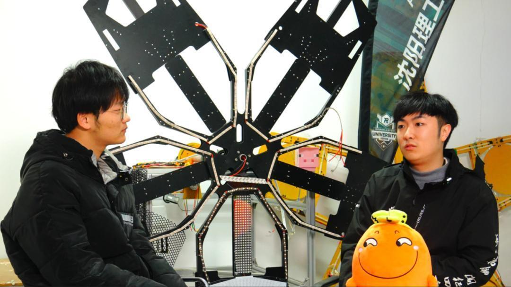

RMer专访|在细节里“焊”出极致——陈显楷

陈显楷，硬件组组长，大三电气工程专业，爱好RC模型船。
选择加入Ambition战队的原因是什么？又有什么收获？
为了给自己的RC模型船自制电设，想给自己培养一个拿得出手的特长，弥补一下高中时没有拿过奖项的遗憾。认识了许多志同道合的朋友，硬件知识得到提高，对未来有了更清晰的职业规划。

在战队中有哪些心态上的转变？对自己未来又有哪些规划呢？
当角色是学生时单纯的被动的学习吸收知识就行，在战队中需要兼顾各个方面的各个专业的问题以及统合各种资源让它充分利用起来，体会到当学生时体会不到的辛苦，也是为工作提前做好准备。
在战队中坚定了我一个想法——考研究生！坚决不要提前进入社会工作。
在上个赛季中有什么印象最深刻的事，对学弟学妹们又有什么要说的话呢？
自制超级电容控制器功能实现的瞬间，在比赛场上操作间紧张的准备。
该上课就上课，该学习就学习，该备赛就备赛，上课不要玩手机！


在RoboMaster舞台上，陈显楷学长正用自己的方式书写着属于他的故事，无论是考研的挑战，还是他未来的无限可能，他始终保持着热爱与探索，相信在不久的将来，我们能看到他和我们Ambition战队一起，创造出更多属于我们的故事！
END
排版|二阳阳
文案|二阳阳
图片|Ambition战队运营组
审核|青唐三月